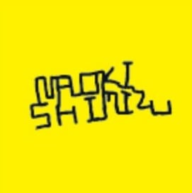

SERVICES
目的に合わせた3つのサービスをご用意しています。
学校・企業・自治体向けに、挑戦と夢をテーマにした講演を実施。元小学校教師ならではの、心に響く話術。
ゴミ拾いしながら地図にアートを描く、SDGs型社会貢献イベント。楽しみながら街をきれいに。
歩いて・走って地図にアートを描く。誰でも参加できるイベント。健康推進・観光PR・チームビルディングに。
CLIENTS
自治体から大手企業まで、幅広いパートナーと実績があります。
VOICE
クイズも楽しく、子どもたちの目がキラキラ輝いていました。「夢を追うこと・職業を創ることの楽しさ」を自分の言葉で語ってくれるので、説得力が違います。
16店舗同時開催で250名参加。準備も丁寧で、当日の盛り上がりも最高でした。多世代参加型のSDGsの取り組みとして社内外に大きな反響がありました。
65歳以上の参加者でも楽しめる設計で感動しました。健康推進と地域活性化を両方実現でき、参加者の皆さん同士も自然とつながる素敵なウォーキングイベントでした。また是非よろしくお願いします！
FLOW
お問い合せから実施まで、丁寧にサポートします。
日程・目的・対象をお知らせください
ご要望に合わせた企画をご提案
ルート設計・資料作成・当日の段取り
全国どこでも出張。オンラインも対応
FAQ
内容・規模・場所によって異なります。まずはお気軽にお問い合せください。ご予算に合わせたプランもご提案できます。
はい、全国どこでも出張可能です。海外での実施実績もあります。オンライン講演にも対応しています。
1〜2ヶ月前のご相談が理想ですが、スケジュール次第では短期間でも対応可能です。まずはご相談ください。
少人数から数百名規模まで対応可能です。コープこうべ様では16店舗同時開催・約250名で実施した実績があります。
メディア出演のご依頼も承っております。「世界の果てまでイッテQ！」「明石家電視台」など多数の出演実績があります。